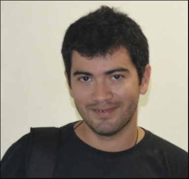

Historico de Formação acadêmica/titulação
|  |
| 1982 - 1987
Ensino Fundamental (1º grau).
Colégio 7 de Setembro.
|
|
2013
Doutorado em andamento em Engenharia de Teleinformática (Conceito CAPES 6).
Universidade Federal do Ceará, UFC, Brasil.
Orientador: José Marques Soares.
Palavras-chave: Processamento Digital de Imagens; Processamento Paralelo.
|
| 1990 - 1992
Ensino Médio (2º grau).
Colégio 7 de Setembro.
|
|
|
| 2002 - 2005
Mestrado em Engenharia de Teleinformática (Conceito CAPES 6).
Universidade Federal do Ceará, UFC, Brasil.
Título: UM NOVO MÉTODO DE COMPRESSÃO DE SINAIS DE ELETROCARDIOGRAMA (ECG) BASEADO NA FORMA DOS BATIMENTOS CARDÍACOS, Ano de Obtenção: 2005.
Orientador: PAULO CESAR CORTEZ.
Bolsista do(a): Fundação Cearense de Apoio ao Desenvolvimento Científico e Tecnológico.
Palavras-chave: ECG; COMPRESSÃO; CLASSIFICAÇÃO.
Grande área: Engenharias / Área: Engenharia Elétrica / Subárea: Processamento de Sinais / Especialidade: Compressão de Dados.
Grande Área: Engenharias / Área: Engenharia Elétrica / Subárea: Processamento de Sinais / Especialidade: Classificação de Sinais.
Setores de atividade: Desenvolvimento de Produtos Tecnológicos Voltados Para A Saúde Humana.
|
|
1989 - 1989
Ensino Fundamental (1º grau).
Colégio 7 de Setembro.
|
|
|
| 1993 - 1998
Graduação em Engenharia Eletrica.
Universidade Federal do Ceará, UFC, Brasil.
Orientador: PAULO CESAR CORTEZ.
|
|
1988 - 1988
Ensino Fundamental (1º grau).
Colegio Militar de Fortaleza.
|
|